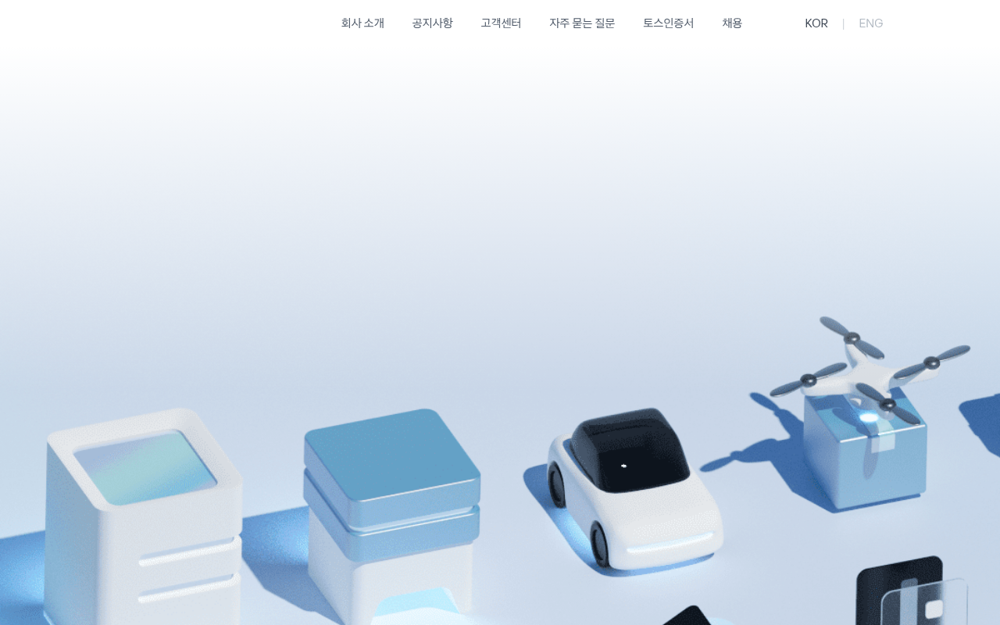

Toss — TDS
https://toss.im 이 실제로 서빙하는 CSS 에서 직접 뽑은 디자인 토큰·타이포그래피·컴포넌트 스펙. 모든 값은 CSS 커스텀 프로퍼티와 클래스 정의를 파싱한 결과이고, AI 추론이나 추측은 섞이지 않았다.

body {
font-family: "Toss Product Sans",
"SF Pro KR", -apple-system,
sans-serif;
font-weight: 500;
}
:root {
--bg: #F2F4F6;
--fg: #191F28;
}
body {
background: var(--bg);
color: var(--fg);
}
:root {
--brand: #3182F6;
}
.btn {
background: var(--brand);
color: #fff;
font-weight: 600;
border-radius: 12px;
}
#FFFFFF 순백으로 두는 것. Toss의 기본 배경은 #F2F4F6 cool gray다. 순백 바탕에 놓으면 Toss 특유의 카드 위 카드 레이어링 구조가 무너진다.
출처와 수집 기준
URL · fetch 시점 · 파싱 방식까지 모두 CSS 번들에서 직접 뽑은 값이다.
https://toss.imreal/fetch_all.py (curl + Chrome UA)--adaptive*, --t* (TDS — Toss Design System)테크 스택
프레임워크, 디자인 시스템, CSS 아키텍처, 테마, 폰트 로딩 방식.
tds.min.css, prefix --adaptive* + --t*button--size-big, button--type-danger, button--style-weak#F2F4F6). dark 모드용 --adaptive* 변수 내장.static.toss.im에서 Toss Product Sans, Basier Square, SD Gothic Neo 로드1px 단위 촘촘한 20단 타이포 스케일
Toss Product Sans를 기본으로, t1~t7 주 스케일과 st1~st13 보간 스케일로 구성. Weight 클래스 없이 컴포넌트별로 직접 font-weight 지정하는 구조.
SF Pro KR, -apple-system, Apple SD Gothic Neo--toss-font-size-{N}, --toss-line-height-{N} 형태로 매핑되지만, 항상 고정 px fallback이 먼저 선언된다.
Toss Blue #3182F6 중심, 10단 Grey 스케일
시그너처 블루 #3182F6가 CTA와 인터랙션 컬러를 지배한다. Grey는 #F9FAFB~#191F28까지 10단 스케일, dark 모드용 inverseGrey가 병렬 존재.
4px 기반 암묵 그리드, 토큰 변수 없음
Toss는 명시적 spacing 토큰을 사용하지 않는다. 모든 간격은 컴포넌트별 직접 px 값 지정이며, 4px 기반 그리드를 암묵적으로 따른다.
padding, margin, gap 값을 px 단위로 작성.
버튼 사이즈에 비례하는 라디우스 8단
버튼 크기가 커질수록 radius도 비례 증가하는 것이 Toss의 특징. tiny(6) → medium(8) → large(12) → big(16).
3-layer rgba 섀도우
모든 elevation은 outline ring + spread + edge 3겹 구조. rgba 기반이라 다크 모드에서도 자연스럽게 작동한다.
inset 0 0 0 1px 형태로 포커스 링(rgba(0,0,33,0.16))과 가벼운 보더 대용으로 사용된다.
100ms ease-in-out 기본 리듬
대부분의 인터랙션은 0.1s ease-in-out. 배경 전환은 0.2s ease. 프로그레스 바 등 강조 전환만 0.5s 사용.
4가지 type, 4가지 size의 버튼 시스템
TDS 컴포넌트의 핵심은 버튼. type(primary/danger/dark/light)과 style(default/weak) 조합, size(tiny/medium/large/big) 축으로 전체 버튼 매트릭스를 구성한다.
bg: #3182F6 (primary)color: #FFFFFFfont-weight: 600border-radius: 12px (large)transition: .1s ease-in-out
Weak variant: bg #E8F3FF, text #3182F6. Danger: bg #F04452. Dark: bg #4E5968.
<button class="button button--size-large">확인</button>
<button class="button button--size-large button--style-weak">취소</button>
<button class="button button--size-large button--type-danger">삭제</button>
<button class="button button--size-large button--type-dark">이전</button>color: #3182F6 (primary)color: #6B7684 (grey)border-bottom: 1px solid #B0B8C1 (underline)
투명 배경, 텍스트 색상만으로 구분. Underline variant는 하단 보더 사용.
<button class="text-button text-button--type-primary">자세히 보기</button>
<button class="text-button text-button--type-grey">닫기</button>background: rgba(color, 0.16)color: badge-text-colorborder-radius: 4pxfont-weight: 600
배경은 해당 색상의 16% opacity. 텍스트는 같은 계열의 진한 단계.
쉬운 금융, 친근한 한국어
Toss는 금융을 쉽게 만든다. 전문 용어를 최소화하고, 구어체에 가까운 존댓말을 일관되게 사용.
CSS · Tailwind
복사해서 바로 쓸 수 있는 Toss 디자인 토큰.
/* Toss — copy into your root stylesheet */
:root {
/* Fonts */
font-family: "Toss Product Sans", "SF Pro KR", "SF Pro Display",
-apple-system, BlinkMacSystemFont,
"Apple SD Gothic Neo", sans-serif;
/* Brand Blue (anchor + 4 steps) */
--toss-color-blue-50: #E8F3FF;
--toss-color-blue-300: #64A8FF;
--toss-color-blue-500: #3182F6; /* ← canonical */
--toss-color-blue-700: #1B64DA;
--toss-color-blue-900: #194AA6;
/* Surfaces */
--toss-bg-page: #F2F4F6;
--toss-bg-card: #FFFFFF;
--toss-bg-dark: #17171C;
--toss-text: #191F28;
--toss-text-secondary: #333D4B;
--toss-text-muted:#8B95A1;
/* Key spacing (4px grid) */
--toss-space-sm: 8px;
--toss-space-md: 16px;
--toss-space-lg: 24px;
/* Radius */
--toss-radius-sm: 8px;
--toss-radius-md: 12px;
--toss-radius-lg: 16px;
}// tailwind.config.js — Toss
module.exports = {
theme: {
extend: {
colors: {
brand: {
50: '#E8F3FF',
100: '#C9E2FF',
200: '#90C2FF',
300: '#64A8FF',
400: '#4593FC',
500: '#3182F6',
600: '#2272EB',
700: '#1B64DA',
800: '#1957C2',
900: '#194AA6',
},
grey: {
50: '#F9FAFB',
100: '#F2F4F6',
200: '#E5E8EB',
300: '#D1D6DB',
400: '#B0B8C1',
500: '#8B95A1',
600: '#6B7684',
700: '#4E5968',
800: '#333D4B',
900: '#191F28',
},
},
fontFamily: {
sans: ['"Toss Product Sans"', '"SF Pro KR"', 'system-ui'],
},
fontWeight: {
normal: '500',
bold: '700',
},
borderRadius: {
sm: '8px',
DEFAULT: '12px',
lg: '16px',
},
boxShadow: {
low: '0 0 0 1px rgba(0,23,51,0.02), 0 6px 20px 0 rgba(2,32,71,0.05), 0 1px 3px 0 rgba(0,27,55,0.1)',
high: '0 0 0 1px rgba(2,32,71,0.05), 0 6px 20px 0 rgba(0,29,54,0.31), 0 1px 3px 0 rgba(0,27,55,0.1)',
},
},
},
};자주 틀리는 것들
Toss 디자인을 구현할 때 실제 CSS에서 검증된 규칙.
DO
- 배경은
#F2F4F6cool gray, 그 위에#FFFFFF카드를 올려라 — Toss의 레이어 구조 핵심 - 브랜드 블루
#3182F6는 CTA 버튼과 primary 링크에만 써라 - 버튼 사이즈에 맞는 radius를 쓸 것:
tiny=6,medium=8,large=12,big=16 - Grey ramp 5단계 텍스트 위계를 지킬 것:
#191F28→#333D4B→#4E5968→#8B95A1→#B0B8C1 - 본문
font-weight는 500이 기본. 400은 서브텍스트, 600은 버튼, 700은 제목에만 - shadow는 항상 3-layer (outline + spread + edge) 구조
- badge 배경은 해당 색상의
rgba(*, 0.16)opacity 패턴
DON'T
- 배경에
#FFFFFF순백을 쓰지 마라 — Toss의 기본 page background는#F2F4F6 - 브랜드 블루를 배경색으로 넓게 깔지 마라 — 블루는 포인트 컬러로만 사용
font-weight: 400을 body 기본으로 두지 마라 — Toss는 500이 normal- Grey scale에서
#000000순흑 사용 금지 — 가장 진한 텍스트도#191F28 - 단일 레이어
box-shadow로 elevation을 재현하지 마라 — 3-layer가 아니면 깊이감이 다름 - Toss Product Sans 없이 대체 폰트를 쓸 때 letter-spacing을 건드리지 마라 — 기본값이 맞다